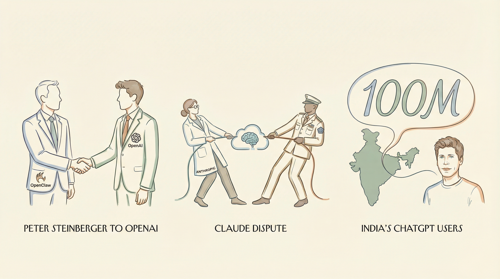

字节跳动调整AI视频生成器安全措施，应对好莱坞版权担忧。
两克伴AIGC日报
2026-02-16 星期一

本期关注：字节跳动调整AI视频安全措施应对版权担忧，印度AI峰会召开，OpenAI招募Peter Steinberger加强代理布局并投资解决电力瓶颈；阿里发布千问3.5性能媲美Gemini 3且价格仅1/18，开源社区现本地化OpenClaw分支推动断网运行。
📰 行业动态
印度AI影响峰会召开，OpenAI、Anthropic等巨头参会。
OpenAI迎来OpenClaw创始人，加强AI代理领域布局。
Peak XV投资印度初创公司C2i，解决AI数据中心电力瓶颈。
🔥 今日焦点
在标志着“代理时代”正式开启的关键时刻，OpenAI宣布了OpenClaw开源框架的架构师Peter Steinberger的加盟。这一举措不仅是一笔高调的招聘，更是对行业如何看待专有智能与开源之间的交汇点产生了根本性的转变。Steinberger的加入，旨在扩大OpenClaw的影响力，这一框架因其创新性和实用性在业界广受关注。他的到来预示着OpenAI将更加重视开源项目，并可能推动AI领域向更加开放和协作的方向发展。Steinberger的加入对AI领域具有重要意义，它不仅可能加速AI技术的普及和应用，还可能促进跨领域的研究与合作，为AI技术的发展带来新的动力和可能性。
---
阿里巴巴于2月16日开源全新一代大模型千问Qwen3.5-Plus，该模型性能与Gemini 3 Pro相当，并登顶全球最强开源模型之列。千问3.5-Plus在底层模型架构上实现了全面革新，其总参数高达3970亿，激活参数仅为170亿，以小胜大策略超越万亿参数的Qwen3-Max模型。该模型部署显存占用降低60%，推理效率显著提升，最大推理吞吐量可提升至19倍。在价格方面，Qwen3.5-Plus的API价格每百万Token仅为0.8元，远低于Gemini 3 Pro的1/18。这一发布标志着阿里巴巴在AI领域的持续突破，不仅对开源社区具有深远影响，也为AI从业者和研究者提供了高效、经济的大模型选择，有望推动AI技术的广泛应用和创新发展。
---
近日，Reddit用户u/zsb5在尝试使用OpenClaw时，因数据外泄问题无法应用于工作场景。为解决这一问题，他花费周末时间对OpenClaw进行了修改，去除了云端依赖，打造了一个完全在本地运行的版本——Physiclaw。Physiclaw通过替换默认运行时，使其针对本地端点（vLLM / llama.cpp）进行操作，并移除了数据监控功能。此外，还将智能体角色细分为SRE、SecOps等，限制工具访问权限，避免单一通用助手拥有对所有资源的根访问权限。尽管Physiclaw的代码仍处于初级阶段，但其为在安全环境中运行AI智能体提供了本地化运行的架构。这一举措对于AI领域具有重要意义，它不仅为在严格安全环境下使用AI提供了新的可能性，也为AI从业者提供了在本地化环境中构建和部署智能体的参考案例。
📚 深度长文
本文深入探讨了人工智能在抗生素研发领域的应用。作者César de la Fuente，一位年轻科学家，从青少年时期就对全球问题产生浓厚兴趣。他发现，尽管政府投入大量资金，抗菌素耐药性问题却日益严重。二十年后，这一问题依然严峻。文章详细介绍了de la Fuente如何利用人工智能技术，在广阔的微生物世界中寻找新型抗生素。他通过分析数百万种微生物的基因序列，筛选出具有抗菌潜力的菌株。这一创新方法不仅提高了抗生素研发效率，还可能为解决全球抗菌素耐药性问题带来新的希望。本文对AI在生物科技领域的应用进行了深入剖析，为AI从业者和科研人员提供了宝贵的参考价值。
---
本文深入探讨了网络安全研究员Allison Nixon遭受黑客死亡威胁的事件。文章指出，自2024年春季起，神秘网友“Waifu”和“Judische”在Telegram和Discord频道上发布针对Nixon的死亡威胁，声称“Alison Nixon将很快被汽油轮胎勒死”。作者Kim Zetter通过详细剖析这一事件，揭示了网络安全领域面临的严峻挑战。文章不仅揭示了黑客对网络安全研究者的威胁，还探讨了网络安全领域存在的漏洞和应对策略。对于AI从业者而言，本文具有极高的阅读价值，有助于深入了解网络安全领域的问题，提高自身安全意识。
---
本文深入探讨了AI大模型竞赛下半场的格局变化。文章指出，Qwen3.5的问世，以小胜大，成功捅破了性价比天花板，标志着大模型竞赛下半场的开始。文章通过分析Qwen3.5在性能、效率和成本等方面的优势，揭示了其在AI领域的突破性意义。此外，文章还探讨了Qwen3.5对现有大模型竞赛格局的影响，以及未来AI大模型发展的趋势。对于AI从业者而言，本文提供了宝贵的参考和启示，有助于深入了解大模型技术的发展动态，把握下半场竞赛的机遇与挑战。
📄 重点论文
**核心贡献**: 提出了一种针对LLM智能体的步级认知深度自适应方法，通过动态调整认知模式以适应不同步骤的认知需求，提高了智能体在长期任务中的效率。
**与AI Agent的关联**: 为智能体提供了更灵活的认知策略，有助于提高其在复杂任务中的表现和适应性。
**核心贡献**: 构建了一个包含1800个领域特定工具的交互式环境SciAgentGym，用于评估智能体在多步科学工具使用方面的能力。
**与AI Agent的关联**: 为智能体在科学领域的应用提供了基准测试平台，有助于推动智能体在复杂任务中的研究和应用。
**核心贡献**: 提出了一个新的多模态浏览智能体基准，包括视觉、垂直和可验证性，以评估智能体在开放世界环境中的多模态浏览和深度搜索能力。
**与AI Agent的关联**: 为多模态浏览智能体的研究和评估提供了新的基准，有助于推动该领域的发展。
🛠️ 产品推荐
KanVibe是一款自托管的Kanban看板，专为并行运行多个Claude Code AI代理而设计。其核心功能包括：1）每张任务卡片都配备实时终端（xterm.js），无需tmux附加即可查看任务输出；2）通过Claude Code Hooks自动跟踪任务状态（从“进行中”到“待处理”再到“审核”）。KanVibe有效解决了技术从业者手动检查多个代理状态的问题，提高了工作效率和项目管理效率。
---
Show HN: Claude Rate Widget是一款免费的、开源的macOS WidgetKit应用，旨在直观显示Claude Code的使用限制。该应用可同时展示会话、周度、周度Sonnet和超量使用限制，并以颜色编码提醒用户当前使用情况。通过实时监控Claude Code的使用情况，帮助用户避免在会话中意外触达限制，提高工作效率。该应用特别适用于Claude Code重度使用者，是技术从业者的得力助手。
---
Rakenne是一款基于Markdown定义的智能工作流平台，旨在解决专业领域文档创建中的挑战。该平台通过结构化流程，帮助专家将文档构建过程中的问题和操作步骤转化为可预测、可扩展的Markdown指令，有效避免传统聊天式文档创建的不可预测性和难以规模化问题。Rakenne利用AI技术，实现文档构建过程的自动化和智能化，提高工作效率，助力专业领域知识工作者高效产出高质量文档。